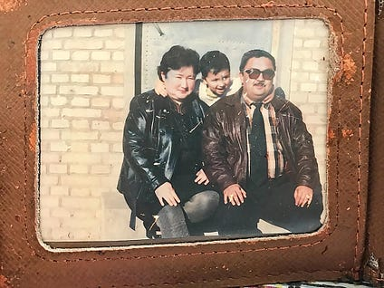
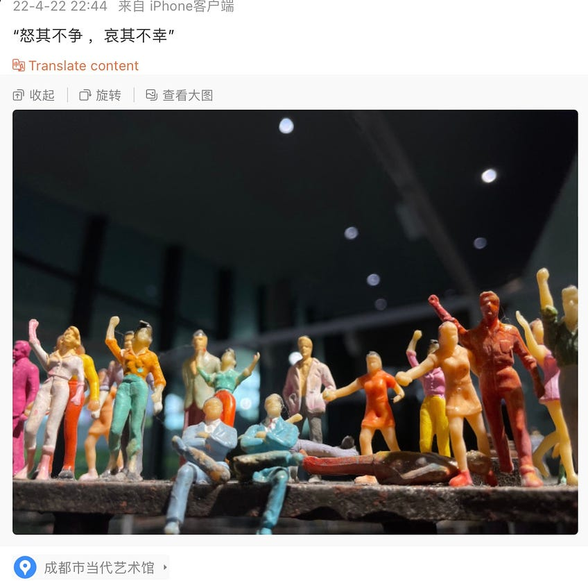
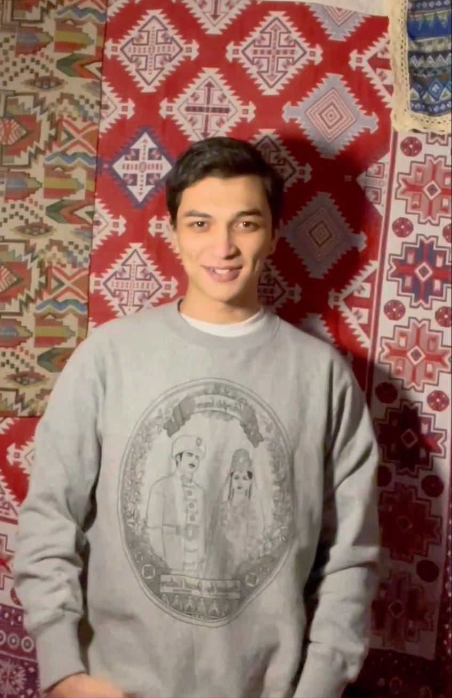

亚夏尔：第二次消失的成都“白纸青年” - WOMEN我们
作为追求用母语创作的歌者，他正蹒跚独立着的职业轨迹，被监视者粗鲁地打断了。2023年春天，他发布了一首叫《wake up》的歌曲，在他描绘的狩猎场景中，他不是猎人，而是猎物。“无法理解额头上撰写的命运，孤独占据了上风，不安、焦虑、担心、惶恐”。
撰文 小李
编辑 伊川
2023 年8月9日，在成都举办的世界大学生运动会闭幕第二天，维吾尔族青年亚夏尔再度被刑拘。这是他第二次被迫消失，此前的2022年冬，他曾在成都望平街参 与“白纸抗议”，悼念乌鲁木齐大火中死去的维族同胞，当天即被带走，但在21天后被取保释放。曾被抓捕的“白纸抗议”参与者们，如今都在严密监控下，小心 翼翼确保着自由；但今年下半年，各地都有人再度被抓，引发寒蝉效应。
很难确定亚夏尔再度消失的真实原因。表面看，再度被刑拘与他维吾尔族的身份有关，他是说唱艺术家，用母语进行表达，警察捕捉其中的只言片语，给他扣上了“极端”的罪名。
边境囚犯
这里是新疆的边境，县级市博乐，雄鸡尾巴北端的一点。距离首都北京3282公里，距离首府乌鲁木齐市524公里，与哈萨克斯坦接壤的边境有95公里。这是天山山脉以北，赛里木湖哺育了她的子民。
渐入深秋的11月，一位律师从北京坐了4小时20分的飞机抵达乌鲁木齐，又从乌鲁木齐坐了4小时5分钟的高铁，到达博乐市，在市的看守所会见到了亚夏尔。这是亚夏尔自8月7日从成都被跨省带走后，三个多月来第一次与外界接触。亚夏尔的朋友转述律师的说法说，他状态不好，深邃的眼眶里全是恐惧。
在成都热腾腾的茶馆、地下酒吧和独立书店里，亚夏尔是醒目的那个。他二十来岁，有双长腿，眼眶深邃，有棱角，是英俊的中亚人长相。从青春期开始，亚夏尔就用维吾尔语创作音乐。他的创作和所有说唱歌手没有两样，都是从自身的经历中寻找韵脚，创作类似于诗歌一般的讲述，在旋律中表达出来。唯一有些不同的是，亚夏 尔用维吾尔语创作。
这是亚夏尔第二次消失了。之前是2022年的11月27日。那天晚上，他赶到成都锦江旁的望平街，走进了聚集的人群中 心，他举起蜡烛跪下，用维语唱起挽歌，为几天前乌鲁木齐大火遇难的10名同胞默哀。便衣警察和挑事的打手把他包围，有人高声指责他这个异域长相的人是扰乱中国的境外势力，有几个打手把他摁倒在地，喊着他们可能唯一会的英文脏话，对其拳脚相加。亚夏尔当晚和其他几名在人群中心的年轻人一起被带走，被以扰乱公 共秩序的罪名刑事拘留，21天后被取保释放。
与其他曾被抓捕、刑事立案或进行行政处罚的参与者一样，亚夏尔自此进入监控之网。2023年8月9日，成都的世界大学生运动会闭幕第二天，新疆博乐市的警察赶到成都，把他从出租房带走。在那半个月前，他刚过了25岁生日。
亚夏尔的消失是无声无息的，没有文件，没有手续，不论是他在成都的女朋友，还是在新疆的家人，都不知道是什么人将他抓去了哪里。后来隐约有消息从新疆传来，亚夏尔被抓回了原籍，直到三个多月后的11月13日，当他的案件侦查结束，被移送至博乐市检察院等待审查起诉，援助他的律师才获取了准确的案件信息，并赶 去边境会见了他。
警方认为亚夏尔犯了两个罪，分别是宣扬极端主义罪，以及非法持有宣扬极端主义的物品罪。中国从2015年起从立法层面对新 疆人进行严格管控，指控亚夏尔的罪名，都是2015年11月1日起实行的刑法修订案九中，在第120条里增加的控罪名目，最高判处五年有期徒刑。这次刑法大修后不久，这年的12月27日，《中华人民共和国反恐怖主义法》在全国人民代表大会通过，并自2016年1月1日起施行，这份立法对边疆地区少数民族的 宗教、文化和生活，施加了前所未有的有罪化视角。
亚夏尔犯了“极端罪“的依据，主要是他公开发表的几首维语歌词，以及在对住所的突击搜查后查到的物品，但据熟悉案情的人说，警察并没在他的出租屋里查到了什么。“他在网易云音乐上发了他创作的歌曲（Uigga），现在仍然可以看到，（警察）挑了一些字句说有问题。”
即使证据薄弱，一位朋友也悲观地断定，亚夏尔大概率要遭受这场牢狱之灾。“在那个地方，这种罪名，（检察院）不起诉的可能性不太大。”检察院审查起诉最短一个月即可完成，届时亚夏尔将可被会提起公诉，送至法院。

Figure 1: 亚夏尔幼时与父母的合影。
祈求幸运的赛里木湖之子
亚夏尔在乌鲁木齐上了大学，他的父亲是博乐市的公办教师，妹妹在今年上了大学，这家人生活上紧巴巴，去年底他第一次被抓进成都的看守所后，他的父亲要等学校发工资，才能凑够旅费，坐火车到成都给他送寒衣。虽处天山以北，博乐市城区的规划建设与国内三线小城没有区别，在市中心有方方正正的路网，市中心的路得名团结路、建国路、红星路、延安路、民主路、文化路，市内的河叫七一水库，离市区稍远点的路，才得名赛里木湖路或是哈察尔路。
从成都的看守所被取保释放后，亚夏尔对我提起他的家乡。从身份证看，他生于1998年，接受义务教育时，边境小城的老师还用维吾尔语授课，在博乐市近100公里的边境线附近，他不需要下载翻墙软件。他考上了新疆财经大学计算机专业，离开博乐去了自治区首府乌鲁木齐，他在大学里被要求只能使用汉语，他记得有一天晚上，他偷偷用维语给母亲打电话，被辅导员发现，得了一记处分。大学没收了他的护照，说是毕业还他，但至今他没能要回来。有同样失去护照的同胞，办出来旅行证去欧 洲，或者跑去土耳其，他也有过这样的机会，但他放弃了。
亚夏尔说，他曾亲眼见过一位朋友去往境外后，他的亲戚朋友，甚至邻居都被牵连，抓进了“再教育营”关了好一阵。他担心自己如果离开，会牵连家人和邻里，妹妹还在上学，他的父亲不能丢工作。
从青春期开始，亚夏尔就用维语创作说唱歌曲。
他的艺名是Uigga，他曾在一首歌里表示，这个名字是“幸运星“的意思。他的歌曲总是反映生活对他的摧折，比如有朋友自杀，他表达惋惜和悔恨，而在 2019年参加新疆地区说唱歌手的选秀比赛时，他登台演唱了一首自己写的《Maybe You Maybe Me》，歌词里写道“当然第一个问题就是如何在地下一层生存；疲惫的身躯生活骑在了身上你的脊椎也弯了么；很抱歉，高枕无忧的人在你身边太少太少。”
这首歌在2017年上传网络时，在中国境内上传维语歌曲已经十分困难，他必须将歌词翻译成中文，以表明内容是“没问题”的。这首歌上传时，他在歌词最后写下了这样一段话：“请相关审核人员们手下留情，本歌曲及歌词内容没有涉黄，没有涉及暴力个（和）政治反动、毒品、也没有低俗等违法违规词汇。全是内心真实的写照，讲述一个真实的故事，生活总是不顺真的，像歌名一样，也许是你也许是我会遇到各种不顺，都不容易对吧，这首歌词我也很努力的翻译了，希望你们可以帮 助我让更多人听到，P&L！爱你们！（注：P&L是Peace&Love的缩写）”
7月25日是亚夏尔的生日。2019年开始的生日前后，他都会上传一首歌曲，描述自己的心境，截止2023年的7月25日，一共五首生日歌曲。这些歌词的主题都充满了忙碌和面对生活压力时的疲惫，“脊椎被压得变形也未曾停歇，为着生存忙碌的度过每分每刻”；“低落就像寄生虫，来自四面八方的压力就像铁链锁着我的和喉咙，现实就像品质很好的剃须刀，剔除我每一根自我和尊严”。
2022年7月25日，他上传了两首的生日歌，表露出了辞职出走的意愿。他向人介绍，“我是一个艺术家，也是个漂泊者，赛里木湖之子，博乐的骄傲”；“向外走，来到摩托车旁，目的地在何方不知道，想要的总会得到”。他参与服装品牌和文化公司的创业了，这年11月底，他录制了MV，介绍自己品牌的文化衫。

Figure 2: 亚夏尔2022年4月发布的社交媒体帖子
为乌鲁木齐走上街头
稍有起色的人生，很快被集会现场的铁拳打碎了。他后来总是用开玩笑的语气提到，2022年11月27日那天晚，他被误认为外国人，打他的几个人用英文骂他，他其实很想反驳，“我想说我普通话比你好”，他被投进了看守所，犯人见他是新来的，想要欺负他，他就脱了上衣，露出后背的纹身。后来他说了自己被抓进来的缘由，那些因偷盗或诈骗而被拘留的犯人对他客气了许多。
2022年11月24日19时49分，在新疆乌鲁木齐市天山区，处于封控中的吉祥苑小区发生火灾，造成10人死亡，9人受伤。一位维族母亲和四个孩子丧生在无处可逃的高层住宅中，他的丈夫当时被羁押在新疆的“再教育营”，无法在家帮忙逃生。
火灾发生后的11月25日，大量市民聚集在乌鲁木齐街头，高喊解封。讽刺的是，在人民政府的广场前，领头的人举着有五颗星的中华人民共和国国旗，跟随者们唱起国歌，这是他们大多数人失去自己的语言后，学会的第一首汉语歌曲，第一句便是：“起来，不愿做奴隶的人们。”当晚的乌鲁木齐街头，警方与民众发生了冲突。许多乌鲁木齐本地居民在短视频平台开启直播，在当晚前半夜，只要将定位调至“乌鲁木齐”，就能看到一张张哭泣着的脸，到了后半夜，有关账号悉数被封。
乌鲁木齐人死于无意义封控，是人祸。2022年11月26日和27日，上海市民选择在市中心的乌鲁木齐中路聚集，哀悼这场大火的死难者。他们经历了噩梦般的春天，带着创伤冲破封控，走出家门。他们把A4纸举在头上，白纸上什么都没写，却胜过千言万语。
11月27日，广州、成都、武汉、北京等城市的市民，也都冲破封控，拿着白纸聚集了起来。成都人聚集的望平街靠近锦江，有美食街和滨河公园，是喝茶和闲聊的地方。这晚，人们举着白纸和手机屏幕，大喊“不自由，毋宁死”，呼唤解封，呆到后半夜。抗议是温和的，带着久未出门相聚的温馨快乐，有人领起了舞，还有情侣 在河边拥吻。
在几个城市里，成都警方是行动得最快的。11月27日当晚，他们奉命控场，授意打人，并且不留余地地捉走了亚夏尔在内一些显眼的角色，当晚就拘留了他们，罪名是“聚众扰乱公共秩序”。
这些普通人起初消失得无声无息。他们的亲属赶到成都，但跑遍几个看守所，都查不到他们的名字，后来有人告诉他们，这是政治犯，被改了名字，只有代号。律师自发地去援助他们，但直到12月中旬都无法会见。但到了12月下旬，有人把锦江河畔的青年被抓的消息公布了出来，外部声援之后，被外界所知的年轻人均被释放了。成都被抓的年轻人中，包括亚夏尔在内，多数进入了刑事程序，是被取保释放的，总共被羁押了21天。
亚夏尔回忆，被审讯的时候，他因为维族人的身份遭遇了特别对待，不断被询问参与聚集的动机，他坚称自己只是可怜自己的新疆同胞，只是想去哀悼。
他只是抗议浪潮中的一滴水。在无端地被限制自由三年之后，汉人，维族人，人们互为镜像，看到不可抵御的厄运中彼此的息息相关。
在上海，警察封锁周边街区，带着盾牌与人民对峙，还围成包围圈，把不愿离开的人包围在中心地带，只出不进，瓦解聚集的人数。但人们不愿离开，即使被驱赶到几个街区之外，蹲坐在地铁站周围，也仍在呐喊，并不停歇地向社交媒体上传现场视频。几辆大巴开来，上面坐满武警，开始有人殴打抓捕记者，一批批地往车上抓抗议者，到了27日晚间，“乌鲁木齐中路”的路牌被拆走了。
实际上，11月27日之前，广州市海珠区的抗议已经绵延数周。工人被多日封控失去收入，从11月上旬起就不断有人冲破封锁的卡哨，到了11月14日晚，工人集体冲破城中村的警戒线，聚集在街头抗议管控设施，他们合力掀翻了警车，还群殴穿防护服的“大白”。到了11月17日，一名冲卡女子被警察反绑双手跪地示众，照片在社交媒体疯传，引发反抗声浪。海珠区成为抗争的象征，在2022年 11月27日这天，举着白纸的人汇集在了海珠广场。
在北京朝阳区亮马河畔，人们是在下午开始汇集的。在那之前几天，北京当局宣布要全城静默，上海噩梦压床，居民都被憋坏了。在那个还没有很冷的夜晚，被拘禁在家里多日的人们冲出家门散步透气、举起白纸呐喊，许多人脸上有兴奋与满足的笑容。他们都是三年封控中备受折磨的人，包括但不限于：电影导演、出版人、媒体人、大学老师、普通白领、学生、少数民族，以及性少数群体。一群女孩在河边风景优美处排列起蜡烛，奉上写了哀悼诗句的花束。有人唱歌，有人读十四行诗，有人接受外媒采访。
一位退休年龄的女士站在人群中央演讲，内容包括美国的《独立宣言》。她是“六四”故人，和丈夫曾服刑共计十几年，一举一动都在警察的重点监控之下。那天晚上，她告诉我，她和丈夫住在亮马河边，听到了噪音才下楼，发现聚满了抗议的年轻人，他们夫妇非常激动，恍惚间回到了33年前的天安门广场。她说，看到年轻人敢反抗，觉得这个国家未来是有希望的。

Figure 3: 亚夏尔为自己品牌的文化衫拍摄的广告视频截图。
“一群猎人”
上海的抗议者在11月27日当晚被大巴成批量拉走，他们被拉进派出所进行筛查，多数人获得了释放。一些人被缴获了聊天记录，遭遇刑拘。“白纸抗议”后的几周，在上海街头，常有警察违反程序强制检查路人手机。北京的警察纠结得多。在第二天的时候，他们似乎还没决定抓谁，只是通过现场信号车捕获的实名手机号，挨个打电话询问，对于在人群中央的，被拍了视频上传外网的，就直接定位，上门盘查。有人已被带去抽血，这是被关押进看守所前的步骤，但警察又突然接到通知，把她们放了出来。
但到了12月初，防控政策突然放开，病毒感染高峰袭来。12月18日左右，北京警察带着一张张罪名栏空白的刑拘通知书，开始了正式的上门抓捕，抓捕持续到了圣诞节前夕，朋友们口口相传消失的朋友，超过二十人。抓捕的主要是抗议现场的看起来角色突出的人，但也 有低调但始终被警方监控的人，她们是在“全国执法行动”或满足维稳KPI时，可以随意从池中捞起的鱼儿。
外界呼吁之下，大多数被抓捕的人均未被检察院起诉，在2023年春夏之交被放了出来。被释放的人，有的领了行政处罚，有的暂且取保。他们共通的身份是“被挂号”，成为维稳对象。
这只是暂且争取到的自由，被重点盯着的人，随时可能被抓回去。“我也不知道，到底是哪一个具体的原因导致了亚夏尔被抓捕。”援助他的人说。
可以断定的是，亚夏尔第一次被抓捕和释放后，作为追求用母语创作的歌者，他正蹒跚独立着的职业轨迹，被监视者粗鲁地打断了。2023年春天，他发布了一首叫 《wake up》的歌曲，在他描绘的狩猎场景中，他不是猎人，而是猎物。“无法理解额头上撰写的命运，孤独占据了上风，不安、焦虑、担心、惶恐”。
2023年7月23日，又要过生日了，他发布了生日歌，这首歌不长，但歌词中写道：“我多么渴望正常的人生，但拿到手的剧本却是悲剧，我成为了故事，面对着现实”。
这首歌发布五天后，在成都举办的世界大学生运动会开幕了。亚夏尔在那段时间遭受了更严格的监视。据他的朋友回忆，警方授意了混混尾随他，他不愿顺从这种明显的跟踪，与混混理论，拍视频发朋友圈。或许是这个行为被认为“过激”，于是在大运会结束的第二天，8月9日，他被带走了。
亚夏尔一直生活在汉族人的社群中，在成都有许多汉族朋友，包括女朋友。他被警方视作“极端”，或许只是因为他是个无法被同化的维吾尔人，不愿意放弃自己的母语，被视为永恒的不稳定因素。
有人在他的歌曲下留言：Uigga（亚夏尔）身上有一种特别的气质，如果非要用饮料来比喻他，应该是柠檬味的苏打水。入口微酸不是很好喝却很抓人，咽下时气泡摩擦的清爽过瘾但暗藏着细腻的甜凉。就像他本人的小脾气看似富有攻击性，其实剥开来全是对这个世界的温柔和悲悯，如果你愿意去品尝这一切，你会不自觉流 下些眼泪。